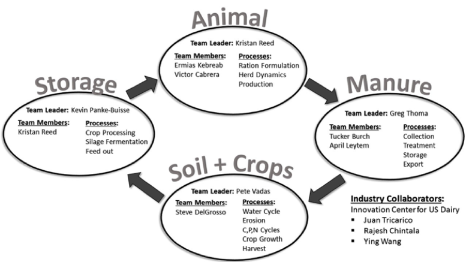

Developing the Animal Module of the
Ruminant Farm Systems Model (RuFaS)
Manfei Li
Ph.D. student with Dr. Cabrera
Outline
- Ruminant Farm Systems Model (RuFaS) overview
- Animal module
- Preliminary analyses using the module
- RuFaS potential applications
- Ruminant Farm Systems Model (RuFaS) overview
- Animal module
- Preliminary analyses using the module
- RuFaS potential applications
Ruminant Farm Systems Model (RuFaS) overview
- Background
- Model foundation
- RuFaS Model structure
- RuFaS Modeling team
- RuFaS Framework
Background
- Dairy farms management is complex and requires much scientific information
- Computer models deliver information cheaper and faster to producers
- Whole-farm models evaluate connections between components that hard for physical research to investigate
- Whole-farm model identify ways to improve overall production efficiency and minimize environmental impacts
Model foundation
- Updating Integrated Farm System Model (IFSM)
- To build a new model with
- Easier programming language
- More flexibility
RuFaS Model structure
RuFaS Modeling team
RuFaS developing process
- Identify module structure
- Generate flowcharts and pseudocode
- Write Python code
- Unify input and output format
- Connect modules
- Ruminant Farm Systems Model (RuFaS) overview
- Animal module
- Preliminary analyses using the module
- RuFaS potential applications
Animal module
- Overall structure
- Animal life events flowcharts
- Stochastic Monte Carlo simulation
- Pseudocode example
- Demonstration and next steps
Overall structure
Animal life events flowcharts
Animal life events flowcharts
Stochastic monte carlo simulation
- Stochastic: events happen with a chance
- Monte Carlo simulation
- The past is irrelevant
- Multiple iteration
- Aggregated iterations assure the final distributions represents actual situation
pseudocode example
code demostration
from __future__ import print_function
from cowa import Cow
import numpy as np
import random
import math
import matplotlib as mpl
mpl.use('TkAgg')
import matplotlib.pyplot as plt
class Holstein(Cow):
# @Param repro_method: reproduction method
# @Param date: current date in the herd simulation
def __init__(self, repro_method, date):
# Reproduction method: ED or TAI or ED-TAI
self.repro_method = repro_method
# Cow state statistics
self.cull_stat = []
self.repro_stat = []
self.service_stat = []
self.calving_stat = []
self.feed_stat = []
self.manure_stat = []
self.milk_produced_stat = []
# Lactating statistics for first and later lactations
self.milk_produced_total = [0, 0]
self.milk_produced_days = [0, 0]
# Culling
self.future_cull_date = -1
self.cull_reason = ""
# Lactation curve parameters
self.a = [38, 49, 53.1]
self.b = [36.6, 27.9, 30.1]
self.c = [-3.6, -4.0, -2.4]
self.d = [0.00105, 0.00206, 0.00233]
# Involuntary culling parameters
self.parity_cull_prob = [0.169, 0.233, 0.301, 0.408]
self.mastitis_cp = [0, 0.06, 0.12, 0.19, 0.30, 0.43, 0.56, 0.68, 0.78, 0.85, 0.90, 0.94, 0.97, 1]
self.feet_leg_cp = [0, 0.03, 0.08, 0.16, 0.25, 0.36, 0.48, 0.59, 0.69, 0.78, 0.85, 0.90, 0.95, 1]
self.injury_cp = [0, 0.08, 0.18, 0.28, 0.38, 0.47, 0.56, 0.64, 0.71, 0.78, 0.85, 0.90, 0.95, 1]
self.disease_cp = [0, 0.04, 0.12, 0.24, 0.34, 0.42, 0.50, 0.57, 0.64, 0.72, 0.81, 0.89, 0.95, 1]
self.udder_cp = [0, 0.12, 0.24, 0.33, 0.41, 0.48, 0.55, 0.62, 0.68, 0.76, 0.82, 0.89, 0.95, 1]
self.unkown_cp = [0, 0.05, 0.11, 0.18, 0.27, 0.37, 0.45, 0.54, 0.62, 0.70, 0.77, 0.84, 0.92, 1]
self.cull_day_count = [0, 5, 15, 45, 90, 135, 180, 225, 270, 330, 380, 430, 280, 530]
# Reproduction methods
# ED
if (repro_method == 'ed'):
self.vwp = 50
self.conception_rate = 0.2
elif (repro_method == 'ed_tai'):
# ED-TAI
self.vwp = 50
self.conception_rate = 0.40
else:
# TAI, not yet implemented
self.conception_rate = 0.290
Cow.__init__(self, 40.8, 0.9, 'H', date)
# @Param date: current date in the herd simulation
def update(self, date):
ai_given = False # True if ai is given at this date
calving = False # True if a newborn at this date
milk_produced = 0 # Milk production for current date
cull = False # True if the cow is culled at this date
# Check if ready to be culled
if (date == self.future_cull_date):
self.culled = True
self.cull_stat.append(date)
cull = True
return cull, calving, milk_produced, ai_given, 0, 0
# Cull heifer for fertility concern
if (not self.is_preg()) and (self.days_born > 649) and (not self.is_milk()):
self.culled = True
self.cull_reason = "Heifer no preg for more than 650 days"
self.cull_stat.append(date)
cull = True
return cull, calving, milk_produced, ai_given, 0, 0
# Cull for cow fertility concern
if (self.days_in_milk > 299) and not (self.is_preg()):
self.culled = True
self.cull_reason = "Cow no preg when DIM reaches 300"
self.cull_stat.append(date)
cull = True
return cull, calving, milk_produced, ai_given, 0, 0
# if (self.is_milk()):
# culling with regression
# dim = self.days_in_milk + 1
# inv_culled = -3.5 - 0.28 * dim + 0.075 * dim ** 2 - 0.004 * dim ** 3 + 0.00001 * dim ** 4 - 0.000001 * dim ** 5
# prob = math.exp(inv_culled) / (1 + math.exp(inv_culled))
# # print(prob)
# rand = random.random()
# if (rand < prob):
# self.culled = True
# self.cull_reason = "Culled at certain days in milk with regression"
# cull = True
# return cull, calving, milk_produced, ai_given, 0, 0
# Weight gain with different born seasons
weight_increase = 0
season = date % 90 % 4
mean_weight_inc = 0.84
if season == 1:
mean_weight_inc = 0.82
elif season == 2:
mean_weight_inc = 0.8
elif season == 3:
mean_weight_inc = 0.77
if self.days_born <= 70:
# New born calves average daily gain
weight_increase = np.random.normal(mean_weight_inc, 0.02)
elif self.weight < 680 :
# Mature cows stop steady daily growth
weight_increase = np.random.normal(0.91, 0.02)
manure, feed = Cow.update(self, weight_increase)
# Increment days in milk
if (self.is_milk()):
self.days_in_milk = self.days_in_milk + 1
# Estrus cycle
if ((self.days_born > 360 and self.num_birth == 0) or ((not self.num_birth == 0) and (not self.first_estrus))) and (self.next_estrus_date == -1):
self.next_estrus_date = np.trunc(np.random.normal(21, 2.5)) + self.days_born
elif (self.first_estrus) and (self.next_estrus_date == -1):
self.next_estrus_date = np.trunc(np.random.normal(19, 11)) + self.days_born
# Add estrus date to reproduction stat
if (not self.next_estrus_date == -1) and (not (self.next_estrus_date + self.birthday) in self.repro_stat):
self.repro_stat.append(self.next_estrus_date + self.birthday)
# Heat detection
if (self.days_born == self.next_estrus_date) and (not Cow.is_preg(self)):
if (self.days_in_milk > self.vwp and self.days_in_milk <= 400) or (self.days_in_milk == -1):
# Detect heat
rand = random.random()
if (rand <= 0.6):
# Detected
self.preg_days = -2
self.expected_due = np.trunc(np.random.normal(278,6))
else:
self.next_estrus_date = -1
if (not self.num_birth == 0):
self.first_estrus = False # first_estrus was set to true after first birth
else:
self.next_estrus_date = -1
if (not self.num_birth == 0):
self.first_estrus = False
# Pregnancy
if (Cow.is_preg(self)):
self.preg_days = self.preg_days + 1
# On the 0th day, give AI
if (self.preg_days == 0):
ai_given = True
self.service_stat.append(date)
# On the 32nd day, preg diagnosis #1
if (self.preg_days == 32):
rand = random.random()
if (rand > self.conception_rate):
# Conception failed
self.preg_days = -12
self.next_estrus_date = -1
if (not self.num_birth == 0):
self.first_estrus = False
if (self.repro_method == 'ed'):
self.conception_rate = self.conception_rate - 0.026
# On the 91st day, preg diagnosis #2
if (self.preg_days == 91):
rand = random.random()
if (rand <= 0.096):
# Abortion
self.preg_days = -12
self.next_estrus_date = -1
if (not self.num_birth == 0):
self.first_estrus = False
if (self.repro_method == 'ed'):
self.conception_rate = self.conception_rate - 0.026
# On the 200th day, preg diagnosis #3
if (self.preg_days == 200):
rand = random.random()
if (rand <= 0.017):
# Abortion
self.preg_days = -12
self.next_estrus_date = -1
if (not self.num_birth == 0):
self.first_estrus = False
if (self.repro_method == 'ed'):
self.conception_rate = self.conception_rate - 0.026
# Dry
if (self.preg_days == 220):
self.days_in_milk = -1
# Calving
if (self.preg_days == self.expected_due):
calving = True
self.first_estrus = True # Return to estrus cycle
self.days_in_milk = 0
self.preg_days = -12
self.next_estrus_date = -1
self.num_birth = self.num_birth + 1
if (self.repro_method == 'ed'):
self.conception_rate = 0.339
# Stillbirth
rand = random.random()
if (rand <= 0.065):
calving = False
# Involutary culling reason and date
inv_cull_rate = 0
if self.num_birth > 4:
inv_cull_rate = self.parity_cull_prob[3]
else:
inv_cull_rate = self.parity_cull_prob[self.num_birth-1]
rand = random.random()
if (rand <= inv_cull_rate):
# Cull
r = random.random()
cull_reason_cp = []
if (r <= 0.1633):
cull_reason_cp = self.feet_leg_cp
self.cull_reason = "Feet Leg"
elif (r <= 0.4516):
cull_reason_cp = self.injury_cp
self.cull_reason = "Injury"
elif (r <= 0.6955):
cull_reason_cp = self.mastitis_cp
self.cull_reason = "Mastitis"
elif (r <= 0.8346):
cull_reason_cp = self.disease_cp
self.cull_reason = "Disease"
elif (r <= 0.8991):
cull_reason_cp = self.udder_cp
self.cull_reason = "Udder"
else:
cull_reason_cp = self.unkown_cp
self.cull_reason = "Unknown"
c_upper = c_lower = x_upper = x_lower = 0
for i in range(len(cull_reason_cp) - 1):
if (cull_reason_cp[i] <= r and r < cull_reason_cp[i+1]):
c_lower = cull_reason_cp[i]
c_upper = cull_reason_cp[i+1]
x_lower = self.cull_day_count[i]
x_upper = self.cull_day_count[i+1]
ai = (x_upper-x_lower) / (c_upper-c_lower)
self.future_cull_date = round(x_lower + ai * (r - c_lower) + date)
# Lactation curve with Milkbot model
if (Cow.is_milk(self)):
i = min(self.num_birth-1, 2)
milk_produced = self.a[i] * (1 - math.exp((self.c[i]-self.days_in_milk) / self.b[i]) / 2) * math.exp((0 - self.d[i]) * self.days_in_milk)
if (self.num_birth == 1):
self.milk_produced_total[0] = self.milk_produced_total[0] + milk_produced
self.milk_produced_days[0] = self.milk_produced_days[0] + 1
else:
self.milk_produced_total[1] = self.milk_produced_total[1] + milk_produced
self.milk_produced_days[1] = self.milk_produced_days[1] + 1
# Record stats
if cull:
self.cull_stat.append(date)
if calving:
self.calving_stat.append(date)
self.milk_produced_stat.append(milk_produced)
self.manure_stat.append(manure)
self.feed_stat.append(feed)
return cull, calving, milk_produced, ai_given, manure, feed
def print_stat(self):
print('Date born: ', end='')
print(self.birthday, end='')
print('\n')
print('Estrus dates: ', end='')
for i in xrange(0, len(self.repro_stat)): print(self.repro_stat[i], end=' ')
print('\n')
print('Service dates: ', end='')
for i in xrange(0, len(self.service_stat)): print(self.service_stat[i], end=' ')
print('\n')
print('Calving dates: ', end='')
for i in xrange(0, len(self.calving_stat)): print(self.calving_stat[i], end=' ')
print('\n')
if (len(self.cull_stat) > 0):
print('Culled on: ' + str(self.cull_stat[0]))
print('Cull reason: ' + self.cull_reason)
print('\n')
print('1 parity milk production: ', end='')
if (self.milk_produced_total[0] == 0):
print('N/A', end='')
else:
print(self.milk_produced_total[0]/self.milk_produced_days[0]*356, end='')
print('\n')
print('milk production per year: ', end='')
if (self.milk_produced_total[1] == 0):
print('N/A', end='')
else:
print(self.milk_produced_total[1]/self.milk_produced_days[1]*356, end='')
print('\n')
plt.figure('Cow ' + str(self.id) + ' milk production')
plt.plot(self.milk_produced_stat)
plt.show()
Demonstration and next steps
- Calibrate reproduction part
- Complete nutrition module
- Genomic selection
- Facilities
- Health
- Validate with real farm data
- Ruminant Farm Systems Model (RuFaS) overview
- Animal module
- Preliminary analyses using the module
- RuFaS potential applications
Preliminary analyses using the module
- Lactation curve fitting
- How reproduction parameters change influences milk production
Lactation curve fitting
Fitting curves for different breeds and parities
Lactation curve fitting
Fitting curves with different lactation curve models
MilkBot:  Woods:
Woods:
How repro parameters change influences milk production
| Conception Rate Scenarios | |
|---|---|
| Holstein | 27/32/37 |
| Jersey | 34/39/44 |

- Ruminant Farm Systems Model (RuFaS) overview
- Animal module
- Preliminary analyses using the module
- RuFaS potential applications
Research
- Test hypotheses
- Check economic value of doing experiments
- Study interaction across different components
Producer
- Customized model for their farm, with their own farm data and decision preference
- A way to understand their farm and how decisions effect the farm
- Take advantage of the latest technologies